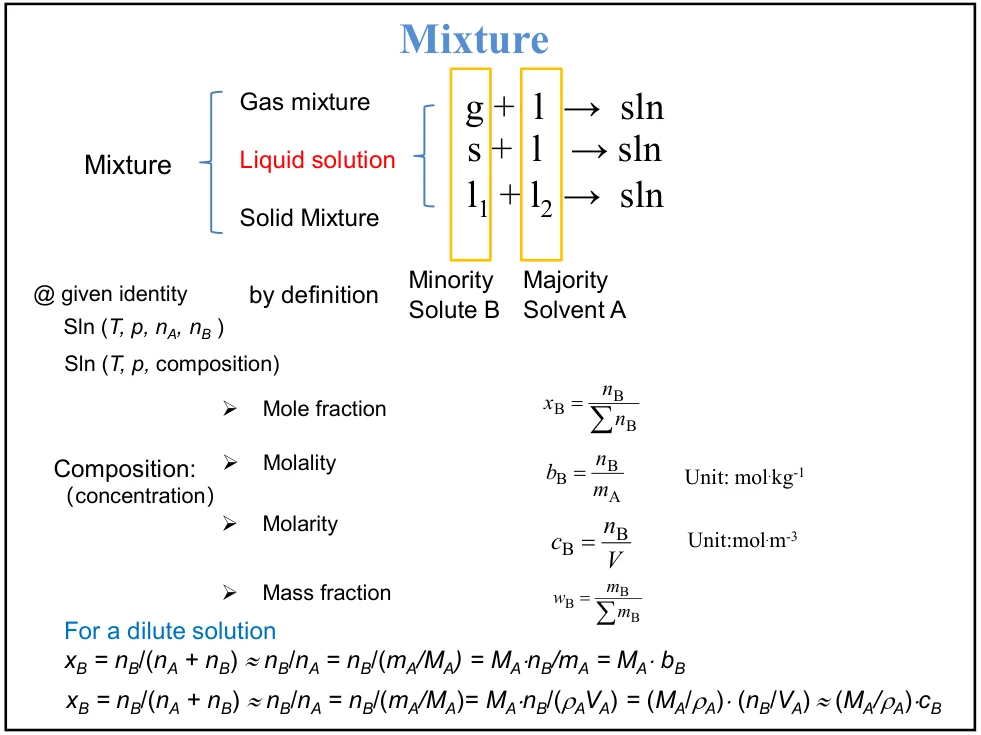
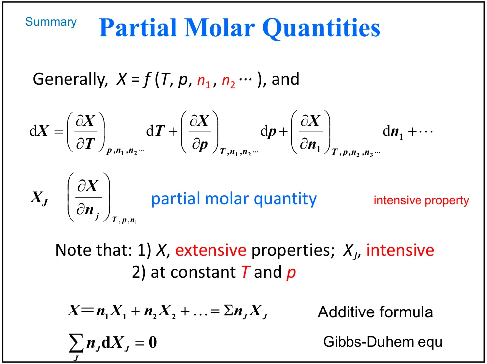
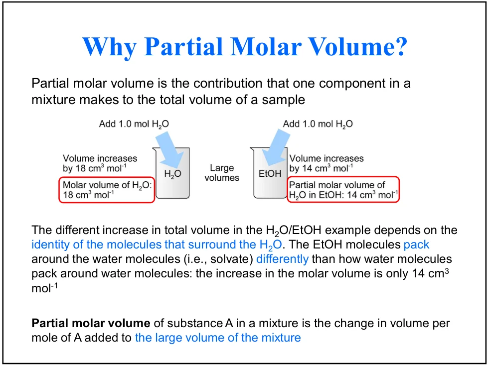
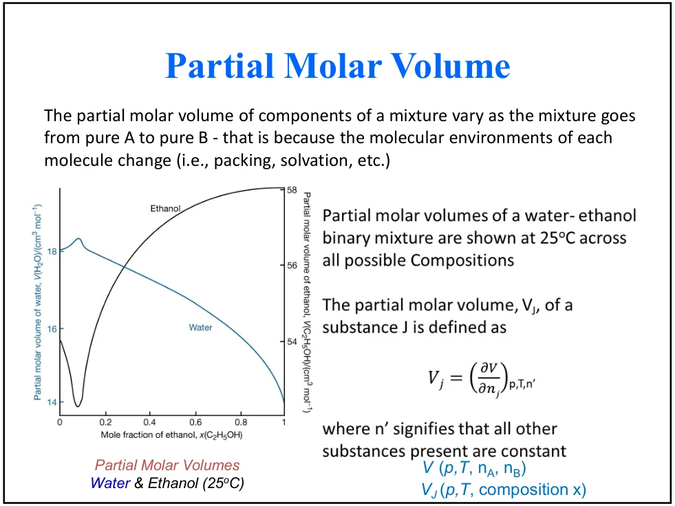
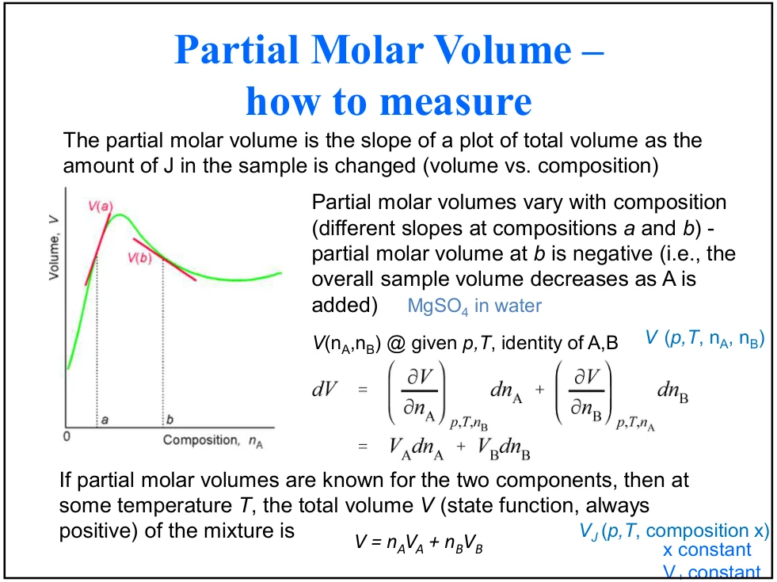
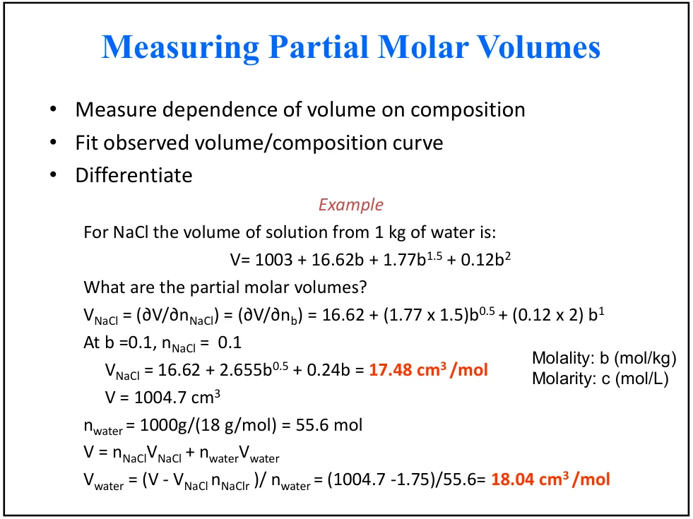
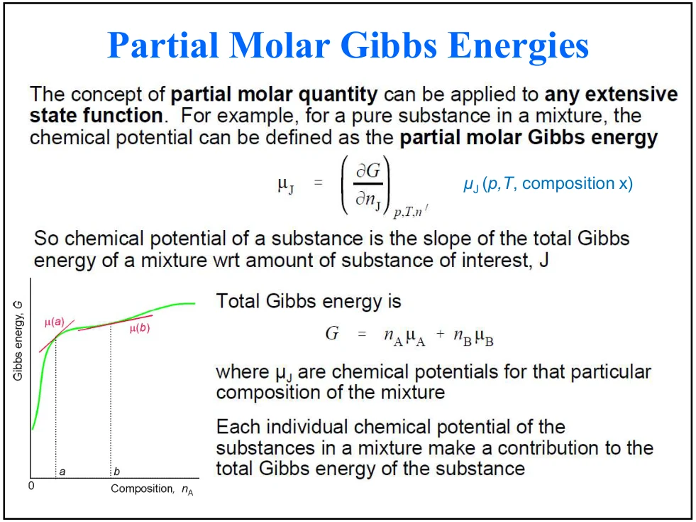
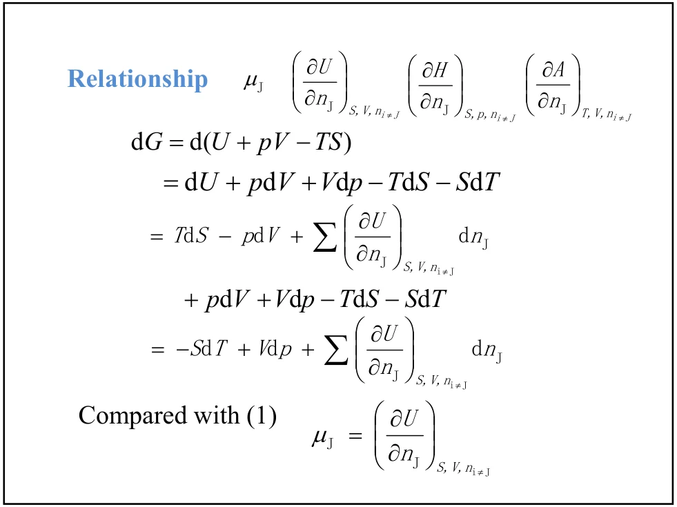
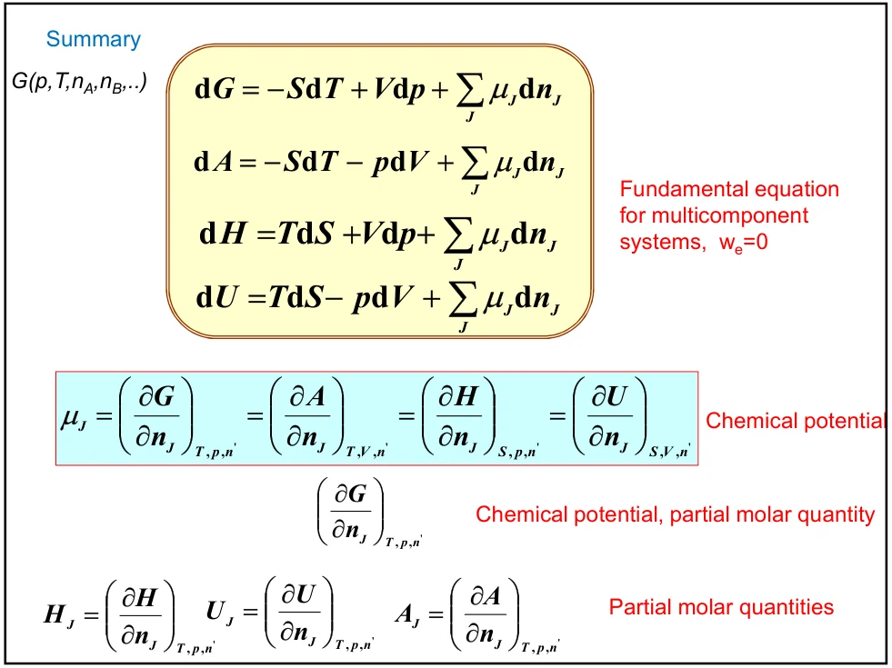
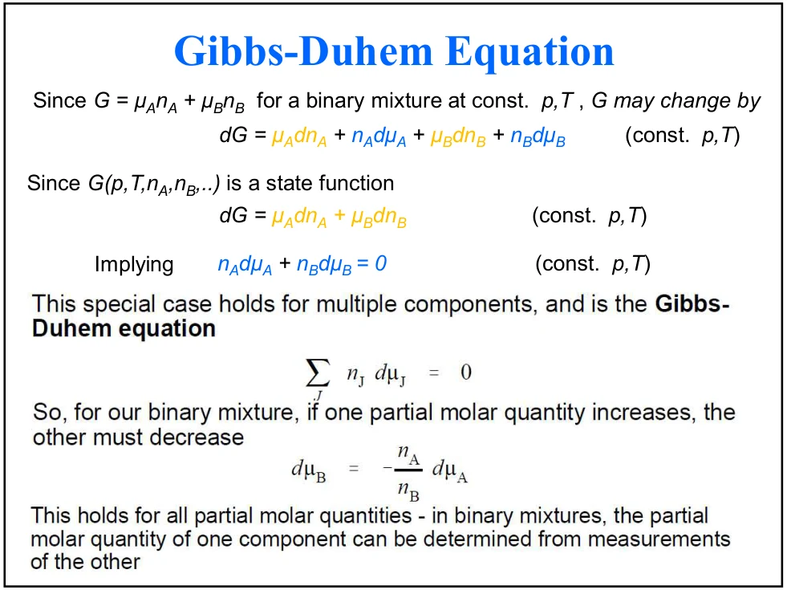

LECTURE 11 · CHAPTER 7 · 2026/10/20
混合物、偏摩尔量与化学势
Simple mixtures · Partial molar quantities · Gibbs–Duhem equation
1. 知识体系：从纯物质走向变组成体系
前两课用纯物质的μ=Gm研究相稳定性。本课增加组成这个自由度：总体积V、Gibbs能G等既取决于T、p，也取决于各组分物质的量ni。由“加一点组分，总性质怎样变”定义偏摩尔量，再由广延性得到加和式，最后导出Gibbs–Duhem约束。
| 推理环节 | 数学主线 | 物理含义 |
|---|---|---|
| 加入组成变量 | X=X(T,p,n₁,n₂,…) | 混合物的环境随组成改变 |
| 定义局部贡献 | X̄ᵢ=(∂X/∂nᵢ)T,p,nⱼ≠ᵢ | 加一点组分i引起的总量增量 |
| 利用广延性 | X=ΣnᵢX̄ᵢ | 在当前组成处重构总量 |
| 识别化学势 | μᵢ=Ḡᵢ | 组分转移的Gibbs能代价 |
| 比较两种dG | Σnᵢdμᵢ=−S dT+V dp | 各组分化学势相互约束 |
本次10页PDF通常每页两张幻灯片，第10页仅上半页。实际内容为浓度表示、偏摩尔体积、偏摩尔Gibbs能、四个基本微分式和Gibbs–Duhem方程。章目录中的理想溶液、Raoult/Henry定律、依数性及活度属于后续主题。本页的切线法与理想气体混合计算作为已标注的推导拓展。
2. 组成的四种写法：先分清分母

| 量 | 定义 | 分母与常用单位 |
|---|---|---|
| 摩尔分数xᵢ | nᵢΣⱼnⱼ | 总物质的量；无量纲，Σxᵢ=1 |
| 质量摩尔浓度bᴮ | nᴮmᴬ | 溶剂质量，取kg；mol·kg⁻¹ |
| 物质的量浓度cᴮ | nᴮV | 溶液总体积；mol·m⁻³或mol·L⁻¹ |
| 质量分数wᵢ | mᵢΣⱼmⱼ | 总质量；无量纲，Σwᵢ=1 |
下标A代表溶剂，B代表溶质；m为质量，M为摩尔质量，n为物质的量。质量摩尔浓度采用溶剂质量，物质的量浓度采用溶液体积。在组成保持的封闭体系中，热胀冷缩会改变c；b和x的数值保持。
x与b的精确换算，再取稀溶液近似
xB=bBMA1+bBMA ≈ bBMA
MA使用kg·mol⁻¹，使bBMA无量纲。近似条件为bBMA≪1。例：水MA≈0.018 kg·mol⁻¹，b=0.10 mol·kg⁻¹，精确xB=0.0018/1.0018≈0.001797，稀溶液近似为0.0018。
x与c：密度进入换算
这里ρA为纯溶剂密度。条件是nB≪nA，且稀溶液总体积近似溶剂体积V≈VA。若c用mol·m⁻³，则M用kg·mol⁻¹、ρ用kg·m⁻³；采用mol·L⁻¹时也要配套体积单位。1 mol·L⁻¹=1000 mol·m⁻³。
3. 偏摩尔量：固定什么，改变什么
设X为均匀单相混合物的广延性质，例如V、U、H、S、A或G。偏摩尔量（partial molar quantity）定义为：
式中X̄i是组分i对总性质的局部增量贡献，单位为X的单位除以mol。下标的意思是：固定温度T、压力p和所有其他组分的物质的量，只让ni改变。加入i时，摩尔分数随之改变；偏导下标中保持的是其他nj。
恒T、p：dX = ΣiX̄idni
n表示全体组分的物质的量；dni很小时，总量变化的一阶近似为X̄idni。在大量混合物中加入极少组分，会使组成变化很小，这正是课件用“加到大量溶液中”解释导数的原因。有限量加入可通过沿途变化的偏摩尔量积分计算。
广延量X随体系按比例放大而放大；强度量X̄ᵢ在保持T、p、组成时与体系总大小无关。偏摩尔量仍可随组成变化。

来源：PDF第9页；以下各式针对可微、均匀的宏观单相体系，采用通常体积功热力学模型，忽略表面等额外贡献。
4. 偏摩尔体积：测到的是整体的体积响应
偏摩尔体积V̄i的SI单位为m³·mol⁻¹，实验中常用cm³·mol⁻¹。1 cm³=10⁻⁶ m³。它的大小来自加入组分后的全部分子环境与堆积、溶剂化响应。

课件用约18 cm³·mol⁻¹与14 cm³·mol⁻¹对比：加水到水中与加水到大量乙醇中，增量不同。这里的数值描述所示环境和极限附近的行为。对有限组成范围，V̄水和V̄乙醇随组成的曲线由第3页下图给出。

负偏摩尔体积怎样理解？
在某些电解质溶液中，加入溶质可引起显著的溶剂化与结构收缩，使总液体体积减小。这时(∂V/∂n溶质)为负。负号描述加入操作对应的净斜率；样品的总体积V仍为正。

例如V̄B=−5 cm³·mol⁻¹，局部加入0.020 mol B，并保持T、p及nA固定，则ΔV≈−0.10 cm³。这个局部线性估算假设此小范围内斜率近似恒定。
5. 加和式与Euler定理：当前组成处的精确关系
同一均匀单相体系按比例放大λ倍，T、p和组成保持，广延性写为X(T,p,λn₁,…)=λX(T,p,n₁,…)。对λ求导，并令λ=1：
X = ΣiniX̄i
这是Euler齐次关系。体积与Gibbs能的两个重要实例为V=ΣniV̄i、G=Σniμi。右侧各偏摩尔量都在同一个最终组成处取值。这样既保持精确加和，又允许偏摩尔量随组成改变。
纯物质摩尔量Xm,i*描述纯i；偏摩尔量X̄i描述混合物中i的增量贡献。纯物质极限下，二者趋于相应纯相值。混合前后性质差可写：
该定义比较同T、p下混合物与分开的纯组分。理想气体的V、U、H混合变化为零是特定模型的性质；真实液体的混合体积和混合焓可正可负。
6. 由实验求偏摩尔量：求斜率，再用加和式
- 固定T、p和另一组分物质的量，测V随加入量的变化。
- 用适合该浓度范围的函数拟合实验曲线，保留单位。
- 对加入组分物质的量求导，得到它的偏摩尔体积。
- 把总量与此结果代入加和式，求另一组分。
课件第4页下半页给出固定nB时的多项式拟合例。把常数项并入截距后，可整理成V=a+b₁nA+cnA²。若V取cm³、n取mol，则a、b₁、c的单位分别为cm³、cm³·mol⁻¹、cm³·mol⁻²；拟合系数b₁与质量摩尔浓度b分别记号。
拟合后微分可能放大噪声，需要在数据支持的范围内使用。若测量的是摩尔体积Vm随摩尔分数x的变化，可用本课“切线法拓展”中的变换求偏摩尔体积。
7. NaCl例题：质量摩尔浓度中的链式法则

课件固定溶剂水质量mA=1.000 kg，体积经验式中的b采用mol·kg⁻¹数值，V采用cm³数值。为把单位显式写清，定义无量纲β=b/(1 mol·kg⁻¹)：
在b=0.100 mol·kg⁻¹时β=0.100，nNaCl=bmA=0.100 mol。偏导实际对n求，先用b=n/mA换元：
= (16.62 + 2.655√β + 0.24β) cm³·mol⁻¹ （mA=1.000 kg）
dV/db的单位是cm³·kg·mol⁻¹，乘1/mA才得到cm³·mol⁻¹。课件把b数值与n数值直接相等，是因为选了1 kg水；换成其他溶剂质量时，需要保留这一换元因子，而且原经验式描述的是1 kg水对应的系列。
V = 1003+1.662+1.77(0.100)32+0.0012 ≈ 1004.7192 cm³
采用课件的M水=18.0 g·mol⁻¹，并保留中间精度，n水=1000/18.0≈55.5556 mol。由V=n水V̄水+nNaClV̄NaCl：
课件给出18.04 cm³·mol⁻¹，来自先把n水取55.6 mol再代入的中间舍入。本页保留精度后得到18.05；均采用课件的18.0 g·mol⁻¹摩尔质量约定。
8. 化学势：偏摩尔Gibbs能与物质转移方向
化学势（chemical potential）是Gibbs能的偏摩尔量：
μi的单位为J·mol⁻¹；给定T、p后，它随混合物组成而变。纯物质中G=nGm，因此μ=Gm；混合物则有Gm=Σxiμi。总摩尔Gibbs能和某一组分化学势通过组成加权联系。

从高化学势向低化学势转移
设同温同压两相α、β之间转移少量组分i，dniβ=dξ，dniα=−dξ，总G变化为：
dξ>0代表由α到β。若μα>μβ，该转移使G降低；平衡时可交换组分的化学势相等。这把上一课的相平衡判据延伸到混合物。若外场或电荷功参与，需使用包含相应贡献的势；本课采用通常体积功模型。
9. 四个基本微分式：从U逐个变换
对可变组成的平衡态简单可压缩体系，基本关系为：
U为内能，S为熵，V为体积，μdn为组成变化项。通过H=U+pV、A=U−TS、G=U+pV−TS展开乘积微分，相消相应项：
dA=dU−T dS−S dT = −S dT−p dV+Σiμidni
dG=dU+p dV+V dp−T dS−S dT = −S dT+V dp+Σiμidni
这里dU、dH、dA、dG是状态函数的全微分。用这些式子研究自发过程时，再结合相应外界约束选势与判据。基础假设为通常体积功体系，未额外引入电、表面和弹性功等独立变量。

| 热力学势 | 自然变量 | 对nᵢ求导的固定条件 |
|---|---|---|
| U | S,V,{nᵢ} | S,V,nⱼ≠ᵢ |
| H | S,p,{nᵢ} | S,p,nⱼ≠ᵢ |
| A | T,V,{nᵢ} | T,V,nⱼ≠ᵢ |
| G | T,p,{nᵢ} | T,p,nⱼ≠ᵢ |
由各基本微分式，四种自然变量下的物质的量偏导都给同一状态处的μi。记住势的自然变量，就能恢复正确下标。
10. 化学势与其他偏摩尔量：下标决定导数

n′代表除ni以外的全部物质的量。标准偏摩尔量一律在T、p、n′固定下定义，所以偏摩尔焓H̄i采用(∂H/∂ni)T,p,n′；上式给μ的H偏导采用S、p、n′。通过对G=H−TS等关系在T、p固定下求偏导，可得：
Āi=Ūi−T S̄i， H̄i=Ūi+pV̄i
进一步交换G的混合二阶偏导：
第一式来自(∂G/∂T)p,n=−S，第二式来自(∂G/∂p)T,n=V。固定全体n时组成也固定，而μ、S̄、V̄是强度量，因此可把温压偏导条件写成固定组成。微分单位同样匹配：J·mol⁻¹·Pa⁻¹=m³·mol⁻¹。
11. Gibbs–Duhem：加和式与基本式共同给出的约束
第一条路线，对广延性得到的G=Σniμi使用乘积微分；第二条路线，使用G的基本微分式：
dG=−S dT+V dp+Σiμidni
∴ Σinidμi=−S dT+V dp
这就是Gibbs–Duhem方程。恒T、p时温压项为零：
二元混合物：dμB=−nAnBdμA=−xAxBdμA
组成变动时，各组分化学势受这个加权微分关系约束。例：在xA=0.80、xB=0.20的某一状态，局部dμA=+10 J·mol⁻¹，则dμB=−40 J·mol⁻¹。有限组成区间内xA/xB随位置改变，求有限变化需要积分。

推广到任一偏摩尔量
固定T、p，对X=ΣniX̄i微分，再与dX=ΣX̄idni比较：
因此一个二元体系中，若测得一组分偏摩尔量随组成的关系，可结合积分所需的参考值恢复另一组分的信息。物理意义是同一混合物中两类局部贡献随组成协同变化。
12. 拓展：从摩尔性质曲线读切线截距
设二元体系总物质的量n=nA+nB，x=xA，Xm=X/n，且X=nXm(x)。在固定nB时增加nA，有∂n/∂nA=1，∂x/∂nA=(1−x)/n。链式法则给：
在Xm–x图的当前点作切线，其x=1截距给X̄A，x=0截距给X̄B，称切线截距法。横坐标若改成xB，A、B的对应端点也随之交换。总量X–nA图直接求斜率；摩尔量Xm–x图先用上述关系转换。
例：Vm=20+10x+4x(1−x)，单位cm³·mol⁻¹。在x=0.25时Vm=23.25，导数为14−8x=12，故V̄A=23.25+0.75×12=32.25，V̄B=23.25−0.25×12=20.25。加权复核：0.25×32.25+0.75×20.25=23.25。
13. 拓展：理想气体混合，把化学势和混合熵连起来
本节把前课的理想气体化学势与本次PDF第2页的理想气体混合结论连起来。初态为不同理想气体在相同T、p下各自分隔，终态为同T、p的均匀混合物，pi=xip。
ΔmixG=RTΣiniln xi
R为气体常数，T为绝对温度，p°为标准压力；对数中的比值无量纲。理想气体相同温度下混合焓为零，由ΔG=ΔH−TΔS得到：
ΔmixS=−RΣiniln xi
等物质的量的两种不同理想气体，若各1 mol、T=300 K，则ΔS=2R ln2≈11.53 J·K⁻¹，ΔG≈−3.458 kJ。相同物质去掉人为隔板，按同一组分描述，组成熵按相应物理初终态计算。
也可检验Gibbs–Duhem：恒T、p时dμi=RT dxi/xi，所以Σxidμi=RTΣdxi=0。理想混合公式与组成约束相互吻合。
14. 应试公式表、静态问答与测验
| 关系 | 应用 | 条件 |
|---|---|---|
| X̄ᵢ=(∂X/∂nᵢ)T,p,n′ | 定义偏摩尔量 | 恒T、p及其他组分量 |
| X=ΣnᵢX̄ᵢ | 由偏摩尔量求总量 | 均匀宏观单相，广延性；取同一组成 |
| dG=−S dT+V dp+Σμᵢdnᵢ | 温压与组成共同变化 | 通常体积功基本模型 |
| μᵢ=Ḡᵢ | 化学势和物质转移 | G的物质的量偏导采用T、p固定 |
| Σnᵢdμᵢ=0 | 二元组分化学势的局部约束 | 恒T、p；有限区间按组成积分 |
| X̄ᴬ=Xm+(1−x)dXm/dx | 切线截距求偏摩尔量 | 二元体系，横轴x=xᴬ |
| xᴮ=bᴮMᴬ/(1+bᴮMᴬ) | 组成换算 | 同一溶剂质量约定；稀释近似另检查bM≪1 |
加和式中偏摩尔量随组成变，为何还能直接相乘求和？
加和式来自保持组成的整体缩放，所有偏摩尔量都取当前同一状态；沿组成变化微分时，另由Gibbs–Duhem关系约束它们的变化。
下标n′是什么意思？
它代表除正在求导的组分i以外，其余组分物质的量均固定。组成分数仍可能随nᵢ变化。
偏摩尔焓与化学势怎样联系？
恒T、p定义H̄ᵢ，μᵢ=H̄ᵢ−TS̄ᵢ；若用H直接对nᵢ求μ，则固定的是S、p及n′。
课件记号与数值整理
课件部分位置用Xᵢ、Vᵢ表示偏摩尔量，本页统一加横线；NaCl例题的“对n_b求导”按浓度换元展开；18.04与18.05的差异在例题说明中集中解释。所有图源按PDF页码及上/下半页定位。
主要材料：本次2026/10/20课件PDF第1–10页。Euler推导、切线法及理想气体混合计算为基于课内关系的拓展。